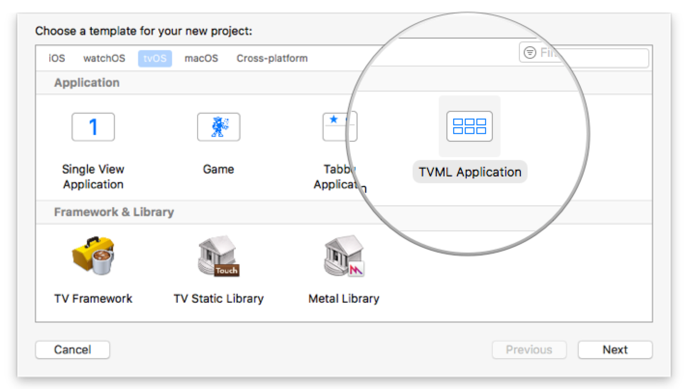
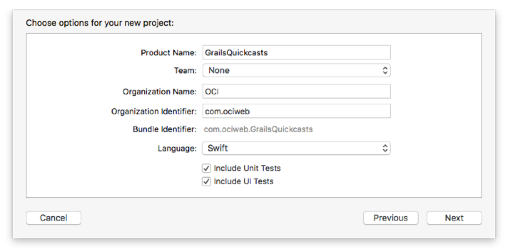
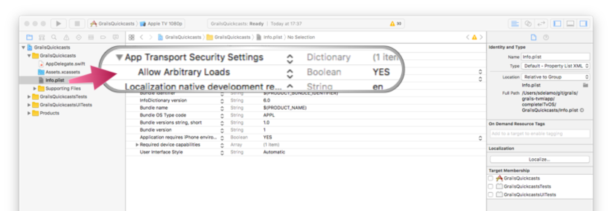
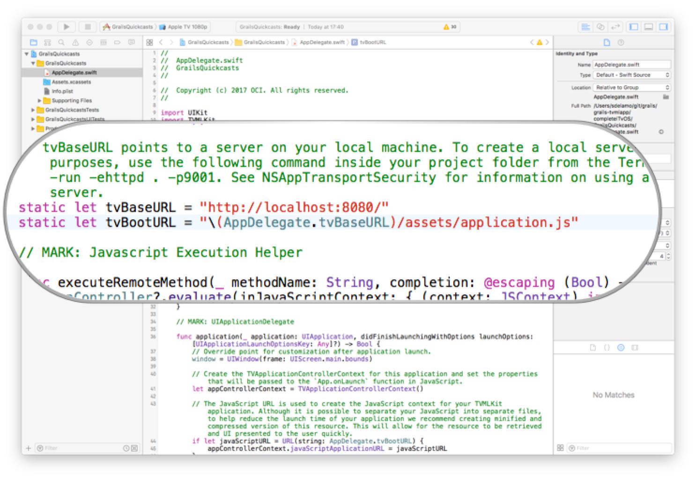
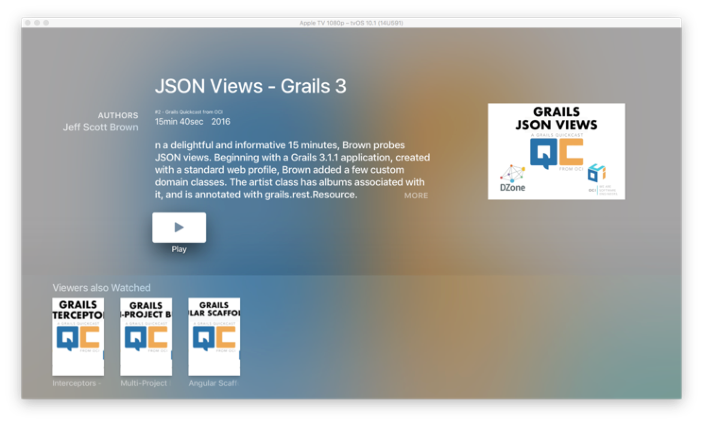

Build a TVML App with Grails
Build an app for Apple TV with Grails. Leverage markup views, asset-pipeline and internazionalization capabilities of Grails to streamline TVML development
Authors: Sergio del Amo
Grails Version: 4
1 Grails Training
2 Getting Started
In this guide, you will write a TVML application.
TVML apps provide you with a way to create apps for Apple TV using TVMLKit JavaScript (TVMLKit JS), the Apple TV Markup Language (TVML), and the TVMLKit framework. Every template has a specific design that follows Apple style guidelines, allowing you to quickly create gorgeous looking apps.
The TVML App, built during this guide, displays an Apple TVML Stack Template of Grails Quickcasts. Grails Quickcasts are short videos of pure Grails coding. When the user selects one, an Apple TVML Product Template shows the Quickcast detail. The user can reproduce the video by selecting the play button.
2.1 Architecture
This guide features a client-server architecture. The client is a tvOS application. The server is a Grails application. The client connects to the server, which responds with TVMLKit JS and TVML documents.

We have separated the Grails application from the data ( mp4 files and Png files ); videos and thumbnails. We use MAMP to run a local apache server at port 8888 pointing to the folder data. During this guide you will see references to mp4 files such as:
link:../snippets/grails-app/init/com/ociweb/quickcasts/BootStrap.groovy[role=include]In a Production environment, you may want to host those files in a service such as Amazon Simple Store Service - AWS S3
2.2 What you will need
{commondir}/common-requirements.adoc * Latest stable version of XCode. We wrote this guide with Xcode 8.2.1.
2.3 How to complete the guide
To complete the Grails application developed in this guide, you will need to checkout the source from Github and work through the steps presented by the guide.
To get started do the following:
-
Download and unzip the source or if you already have Git:
git clone https://github.com/grails-guides/grails-tvmlapp.git -
cdintograils-guides/grails-tvmlapp/initial -
Head on over to the next section
You can go right to the completed example if you cd into grails-guides/grails-tvmlapp/complete
|
3 Writing the TVML Client
To create a TVML application and connect it to a Grails Server we need to modify the variables tvBaseURL and tvBootURL.
Create a TvOS project with the TVML application template.

Choose Swift as the language.

Add a new value App Transport Security Settings (case sensitive), and as its child, add Allow Arbitrary Loads, and set that value to YES.

| Adding this key to your Info.plist is necessary because as of iOS 9, your app will prevent linking to non-HTTPS servers to encourage best practices. In this tutorial, you’ll be testing against a local server without HTTPS enabled, so you’ll disable the default behavior. |
Modify AppDelegate.swift and set the static variables tvBaseURL and tvBootURL.
static let tvBaseURL = "http://localhost:8080/"
static let tvBootURL = "\(AppDelegate.tvBaseURL)/assets/application.js"
4 Writing the TVML Grails Application
The initial Grails application, which you can find in the initial folder, was created with the command:
grails create-app --profile rest-api -features=hibernate5,markup-views,asset-pipeline4.1 TVMLKit JS Utils
TVMLKit JS is a JavaScript API framework specifically designed to work with Apple TV and TVML. TVMLKit JS incorporates the basic functionality found in JavaScript along with specialized APIs designed for Apple TV. Using TVMLKit JS, you are able to load and display TVML templates, play media streams, load customized content, and control the flow of your app. For more information, see TVJS Framework Reference.
Add a JavaScript file to our project. It defines a series of methods nearly identical as those described in the section Playing Media of TVML Programming Guide.
These methods allow to push pages into the navigation stack, fetch documents and play media.
link:../snippets/grails-app/assets/javascripts/tvmlkit.js[role=include]4.2 TV Boot Url
This guide uses Asset Pipeline Plugin
The Asset-Pipeline is a plugin used for managing and processing static assets in JVM applications primarily via Gradle (however not mandatory). Asset-Pipeline functions include processing and minification of both CSS and JavaScript files
Create a javascript file which will be the entry to our TVML Grails App:
link:../snippets/grails-app/assets/javascripts/application.js[role=include]Please note, how the line displayed in the next Listing includes the TVMLKit JS file discussed in the previous section.
link:../snippets/grails-app/assets/javascripts/application.js[role=include]The initial TVML document is the XML rendered at http://localhost:8080/quickcast.
The next line designates the initial document:
link:../snippets/grails-app/assets/javascripts/application.js[role=include]4.3 Domain class
Create a persistent entity to store Quickcasts. Most common way to handle persistence in Grails is the use of Grails Domain Classes:
./grailsw create-domain-class QuickcastThe Quickcast domain class is our data model. We define different properties to store the Quickcast characteristics.
link:../snippets/grails-app/domain/com/ociweb/quickcasts/Quickcast.groovy[role=include]With a Unit Test, we test the property body is optional.
link:../snippets/src/test/groovy/com/ociweb/quickcasts/QuickcastSpec.groovy[role=include]Create a GORM Data Service:
link:../snippets/grails-app/services/com/ociweb/quickcasts/QuickcastService.groovy[role=include]We then load some test data in BootStrap.groovy.
link:../snippets/grails-app/init/com/ociweb/quickcasts/BootStrap.groovy[role=include]4.4 Stack Template
We show first an Apple TVML Stack Template with the Grails Quickcasts:

Create a Grails Controller to handle requests
./grailsw create-controller com.ociweb.quickcasts.QuickcastA request to http://localhost:8080/quickcast executes the index action of QuickcastController
link:../snippets/grails-app/controllers/com/ociweb/quickcasts/QuickcastController.groovy[role=include]The QuickcastController index method renders every Quickcast using the next Markup View
link:../snippets/grails-app/views/quickcast/index.gml[role=include]Markup Views are written in Groovy, end with the file extension gml and reside in the grails-app/views directory.
Write a functional test to test the XML generated is what we expect.
Add the Micronaut HTTP Client Dependency:
link:../snippets/build.gradle[role=include]link:../snippets/src/integration-test/groovy/com/ociweb/quickcasts/QuickcastControllerIndexSpec.groovy[role=include]To facilitate XML comparison in the tests, we include XMLUnit as a dependency.
link:../snippets/build.gradle[role=include]4.5 Product Template
When we select the first Quickcast, the document residing in http://localhost:8080/quickast/1 is pushed into the navigation stack
To render a Quickcast, we use the Apple TVML Product Template.

A request to http://localhost:8080/quickcast/1 executes the show action of QuickcastController.
link:../snippets/grails-app/controllers/com/ociweb/quickcasts/QuickcastController.groovy[role=include]The model passed to our view is the requested Quickcast and a series of related videos.
In application.yml, we configure how many related Quickcasts we want to show.
link:../snippets/grails-app/conf/application.yml[role=include]Fetching of related quickcasts is encapsulated in a Service.
link:../snippets/grails-app/services/com/ociweb/quickcasts/RelatedQuickcastsService.groovy[role=include]The QuickcastController index method renders a Quickcast using the next Markup View
link:../snippets/grails-app/views/quickcast/show.gml[role=include]With a functional test, we test the XML rendered is what we expected.
link:../snippets/src/integration-test/groovy/com/ociweb/quickcasts/QuickcastControllerShowSpec.groovy[role=include]4.6 Internationalization
Internationalization is a first-class citizen in Grails.
To render such a snippet:
link:../snippets/src/integration-test/groovy/com/ociweb/quickcasts/QuickcastControllerShowSpec.groovy[role=include]We use this code:
link:../snippets/grails-app/views/quickcast/show.gml[role=include]Define message codes and default values in messages.properties
link:../snippets/grails-app/i18n/messages.properties[role=include]Including a Spanish localization is easy. Include the localized message codes in
messages_es.properties.
link:../snippets/grails-app/i18n/messages_es.properties[role=include]5 Running the Application
To run the Grails application use the ./gradlew bootRun command which will start the application on port 8080.
Run the Xcode project and your Apple TvOS app will connect to your Grails Backend.